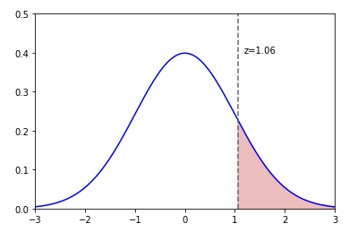

| PolarSPARC |
Introduction to Statistics - Part 2
| Bhaskar S | 07/11/2021 |
In Part 1 of the series, we introduced the basic concepts of Statistics and explored the measures of central tendency and measures of dispersion.
In this part of the series, we will introduce concepts around the various probability distributions. This will require some basic understanding of Permutation & Combinations as well as Probability.
Basic Definitions
A Random Variable denotes a quantitative (numerical) value that is associated with the random outcome of a statistical experiment.
A Discrete random variable has a finite (a countable) number of outcomes (values) in a given interval.
A Continuous random variable can assume an infinite (not countable) number of possible outcomes.
A Probability Distribution is a statistical function that describes the probability of occurrence of each of the possible outcomes of the random variable in a statistical experiment.
Discrete Probability Distribution
A Discrete Probability Distribution lists out each possible value of the discrete random variable along with its probability. The distribution must satisfy the following conditions:
The probability of each value of the discrete random variable is between 0 and 1
The sum of all the probabilities must equal 1
The mean of a discrete probability distribution is computed using the formula:
\(\mu = \Sigma{x_i}.{P(x_i)}\), where i = 1 to n
The variance of a discrete probability distribution is computed using the formula:
\(\sigma^2 = \Sigma({x_i} - \mu)^2.{P(x_i)}\), where i = 1 to n
The standard deviation of a discrete probability distribution is computed using the formula:
\(\sigma = \sqrt{\Sigma({x_i} - \mu)^2.{P(x_i)}}\), where i = 1 to n
There are two popular discrete probability distributions which are as follows:
Binomial Probability Distribution
Poisson Probability Distribution
Binomial Probability Distribution
A Binomial Probability Distribution is a probability experiment that must satisfy the following conditions:
The experiment has a fixed number of repeated trials represented by n
Each of the n trials are independent and repeated under identical conditions (the outcome of one trial does not affect the outcome of other trials)
Each trial has only two possible outcomes - a success (p for probability of success) or as a failure (q for probability of failure = 1 - p)
The probability of a success is the same for each trial
The random variable x represents the number of successful outcomes from the n trials
The mathematical formula for binomial probability distribution of exactly x success(es) in n trials is as follows:
\(_{n}C_{x}.p^{x}.q^{n-x} =\) \(\Large{\frac{n!}{(n-x)!x!}}\)\(.p^{x}.q^{n-x}\), where q = (1 - p), and \(_{n}C_{x}\) = \(\Large{\frac{n!}{(n-x)!x!}}\)
| Example-1 | Knee surgery has a 90% chance of success. The surgery is performed on 3 patients. What is the probability of the surgery being successful on exactly 2 patients. |
|---|---|
|
The following tree diagram illustrates the various outcomes (S for success and F for failure) from the 3 surgeries (experiments): Outcomes
The probability of success (p) = 90/100 = 9/10. The probability of failure (q) = 1 - p = 1 - 9/10 = 1/10. From the illustration above, we observe there are only 3 outcomes that have 2 successful outcomes - SSF, SFS, and FSS. The probability for SSF = 9/10 . 9/10 . 1/10 = 81/1000. The probability for SFS = 9/10 . 1/10 . 9/10 = 81/1000. The probability for FSS = 1/10 . 9/10 . 9/10 = 81/1000. Therefore, the probability for exactly 2 successes from the 3 surgeries = 81/1000 + 81/1000 + 81/1000 = 243/1000 = 0.243. Next, we will compute the probability using the formula: \(\Large{\frac{n!}{(n-x)!x!}}\)\(.p^{x}.q^{n-x}\). That is, \(\Large{\frac{3!}{(3-2)!2!}}\)\(.(0.9)^{2}.(0.1)^{(3-2)}\) = 3.(0.81) = 0.243. |
|
We will look at another example for binomial probability distribution.
| Example-2 | A survey of U.S. adults found that 70% of them believe that there is a link between playing violent video games and teens exhibiting violent behavior. An experiment randomly selects 3 adults and asks them about their belief. Find the probability that at least 2 of them respond YES. |
|---|---|
|
The number of trials (n) = 3. The probability of success (p) = 70/100 = 7/10 = 0.7. The probability of failure (q) = 1 - p = 1 - 7/10 = 3/10 = 0.3. The number of successful outcomes expected (x) = 2 or 3 (because at least 2 of them responsed YES). The probability formula is: \(P(x) = \Large{\frac{n!}{(n-x)!x!}}\)\(.p^{x}.q^{n-x}\). \(P(2) = \Large{\frac{3!}{(3-2)!2!}}\)\(.(0.7)^{2}.(0.3)^{(3-2)}\) = 3.(0.49).(0.3) = 0.441. \(P(3) = \Large{\frac{3!}{(3-3)!3!}}\)\(.(0.7)^{3}.(0.3)^{(3-3)} = (0.7)^3\) = 0.343. Therefore, the probability that at least 2 of them respond YES = P(2) + P(3) = 0.441 + 0.343 = 0.784. |
|
Poisson Probability Distribution
A Poisson Probability Distribution is a probability experiment that must satisfy the following conditions:
Each trial has only two possible outcomes - the event occurs (success) or the event *DOES NOT* occur (failure)
The experiment consists of counting the number of times (x) the event occurs in a given interval of time
The probability of the event occuring (success) is the same for each trial
The number of occurrences in one interval is independent of the number of occurrences in other intervals
The average number of times the event occurs (success) (\(\mu\)) in a given interval is known and is constant
The mathematical formula for poisson probability distribution of exactly x occurrences of the event (success) in an interval is as follows:
\(P(x,\mu) = e^{-\mu}\).\(\Large{\frac{\mu^x}{x!}}\), where e is the base of the natural logarithm and is an irrational number that approximately equals 2.71828 and \(\mu\) is the average number of occurrences of the event per interval.
| Example-3 | In a city, accidents occur randomly at an average rate of 1.8 per hour. What is the probability of observing more than 2 accidents in a given hour in that city. |
|---|---|
|
The probability formula is: \(P(x,\mu) = e^{-\mu}\).\(\Large{\frac{\mu^x}{x!}}\). Given the average number of accidents per hour: \(\mu = 1.8\). We want to find: \(P(x >= 2, \mu) = P(2, \mu) + P(3, \mu) + ...\). This can also be written as: \(1 - P(x < 2, \mu) = 1 - P(0, \mu) - P(1, \mu)\). That is, 1 - \(e^{-1.8}\).\(\Large{\frac{1.8^0}{0!}}\) - \(e^{-1.8}\).\(\Large{\frac{1.8^1}{1!}}\). That is, 1 - \(e^{-1.8}\) - \(e^{-1.8}.(1.8)\). We find that \(e^{-1.8} \approx 0.1653\). Therefore, \(P(x >= 2, \mu) = 1 - 0.1653 - 0.2975 \) = 0.5372. |
|
Continuous Probability Distribution
A Continuous Probability Distribution can be described using a graph f(x) that represents a Probability Density Function. The probability density function describes the likelihood that the values of the continuous random variable (x) fall within a given interval. The distribution must satisfy the following conditions:
Because a continuous random variable (x) can have infinite values, the probability that the continuous random variable takes a specific value is 0
The probability that the continuous random variable (x) assumes a value within an interval, say P(A ≤ x ≤ B), is defined as the area under the graph f(x) between the points A and B
The entire area under the graph f(x) over all values of the continuous random variable (x) must equal 1
The most popular continuous probability distribution is the Normal Distribution (which is also referred to as the Gaussian Distribution).
Normal Distribution
A Normal Distribution is a continuous probability distribution for a continuous random variable (x) that must satisfy the following conditions:
The graph f(x) (referred to as a Normal Curve) is bell-shaped curve (with a long tail) and is symmetrical around the mean
The mean, median, and mode are equal
The total area under the normal curve is equal to 1
68% of the area under the normal curve falls within 1 standard deviation of the mean
95% of the area under the normal curve falls within 2 standard deviations of the mean
99.7% of the area under the normal curve falls within 3 standard deviations of the mean
The following diagram illustrates a typical normal curve:
The mathematical equation for a normal probability density function f(x) with a mean of \(\mu\) and standard deviation of \(\sigma\) is given as follows:
\(f(x,\mu,\sigma) =\)\(\Large{\frac{1}{\sigma\sqrt{2\pi}}}\).\(e^{-\frac{1}{2}(\frac{x - \mu}{\sigma})^2}\), where e is the base of the natural logarithm and is an irrational number that approximately equals 2.71828 and \(\pi\) is an irrational number that approximately equals 3.14159.
For each mean and standard deviation, there is a different normal distribution. In other words, there are infinitely many normal distributions with different means and standard deviations. The normal distribution with a mean of 0 and a standard deviation of 1 is called the Standard Normal Distribution.
The following diagram illustrates the standard normal curve for the standard normal distribution:
The horizontal scale (x-axis) of the standard normal curve of the standard normal distribution corresponds to what is called the Z-scores. A Z-score is a measure that indicates the number of standard deviations a value (x) lies from the mean.
The Z-score for a given x value can be computed using the following formula:
\(Z = \Large{\frac{x - \mu}{\sigma}}\).
In general, a Z-score of more than 3 standard deviations from the mean is considered an outlier.
For a random variable x that is normally distributed, one can find the probability that x will lie in the given interval by calculating the area under the normal curve for the given interval. To find the area under any normal curve, we first have to convert the upper and lower bounds of the given interval to Z-scores. We then use the standard normal distribution to find the area under the curve.
The following illustration shows the negative Z-scores table that correspond to values which are less than the mean:
The following illustration shows the positive Z-scores table that correspond to values which are greater than the mean:
Let us look at a very simple example to find the area to the left of a given Z-score value.
| Example-4 | Find the area under the standard normal curve to the left of z = -0.99 |
|---|---|
|
The following normal curve illustrates the shaded area to the left of Z = -0.99: Left of Z = -0.99
From the Negative Z-Scores table above, we can find that area to the left is equal to 0.1611. |
|
Now, let us look at another simple example to find the area to the right of a given Z-score value.
| Example-5 | Find the area under the standard normal curve to the right of z = 1.06 |
|---|---|
|
The following normal curve illustrates the shaded area to the right of Z = 1.06: 
Right of Z = 1.06
From the Positive Z-Scores table above, we can find that area to the left is equal to 0.8554. To find the area to the right, we need to subtract from the whole area of 1. That is, 1 - 0.8554 = 0.1446. |
|
Now, we look at one other simple example to find the area between the given two Z-score values.
| Example-6 | Find the area under the standard normal curve between z = -1.5 and z = 1.25 |
|---|---|
|
The following normal curve illustrates the shaded area between z = -1.5 and z = 1.25: Between z = -1.5 and z = 1.25
(A) From the Negative Z-Scores table above, we can find that area to the left of Z = -1.5 is equal to 0.0668. (B) From the Positive Z-Scores table above, we can find that area to the left of Z = 1.25 is equal to 0.8944. To find the area between z = -1.5 and z = 1.25, we need to subtract (A) from (B). That is, 0.8944 - 0.0668 = 0.8276. |
|
Finally, we look at a word problem for finding probabilities with the normal distribution.
| Example-7 | The average speed of vehicles traveling on a highway is 67 miles per hour with a standard deviation of 3.5 miles per hour. If a vehicle is selected at random, what is the probability that it is violating the speed limit of 70 miles per hour |
|---|---|
|
Given, the average speed \(\mu = 67\) and the standard deviation of \(\sigma = 3.5\). In order to find the probability if a randomly picked vehicle will violate the speed of greater than or equal to 70 miles per hour, we need to normalize using the Z-score. We know \(z = \Large{\frac{x - \mu}{\sigma}}\) = \(\Large{\frac{70 - 67}{3.5}}\) = 0.8571 \(\approx 0.86\). The following normal curve illustrates the shaded to the right of the speed of greater than or equal to 70 miles per hour: Speed Violation
From the Positive Z-Scores table above, we can find that area to the left of z = 0.86 is equal to 0.8051. To find the area to the right, we need to subtract from the whole area of 1. Therefore, the probability that a randomly selected vehicle will violate the speed limit of 70 miles per hour, 1 - 0.8051 = 0.1949. |
|
References